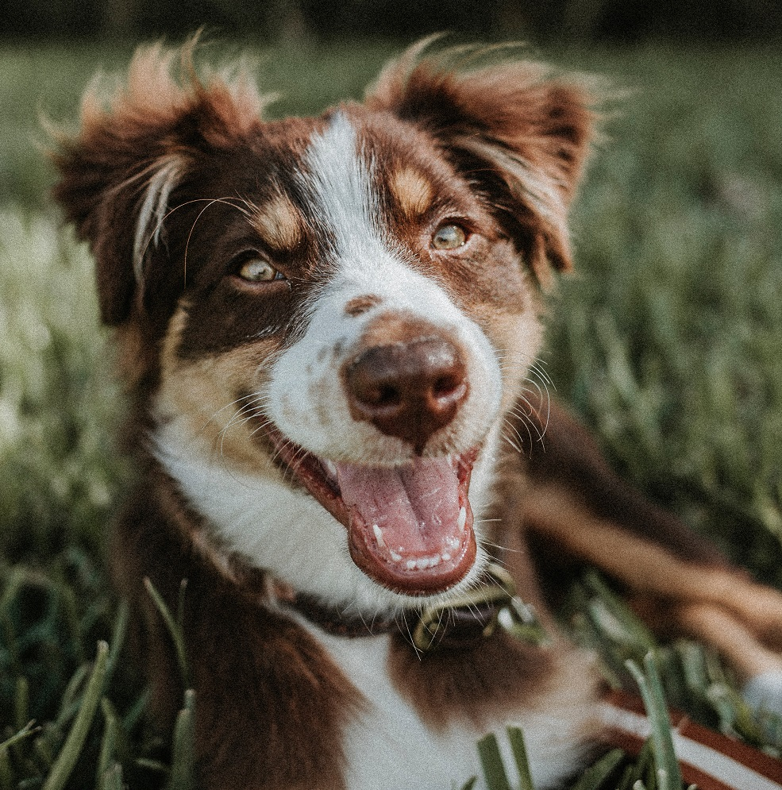
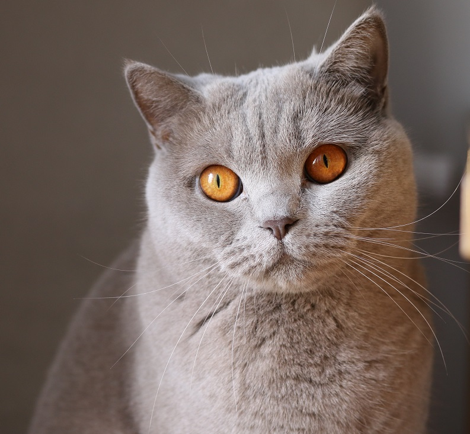
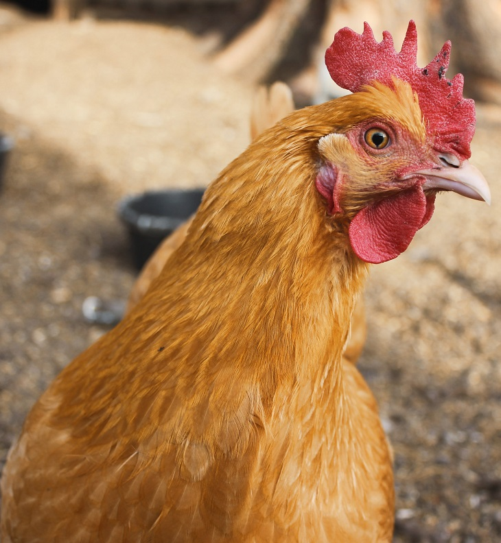

📞 Telefon: 1234567
Avaleht
Loomad varjupaigas
Kaotasid looma?
Toeta
Varjupaigast
Kontakt
Loomade varjupaik

Koerad varjupaigas

Kassid varjupaigas

Teised loomad varjupaigas
Oleme avatud: E-R 9.00-18.00 L, P: 10.00-15.00
Aadress: Roosi 1
Telefoninumber: 1234567
E-mail: info@varjupaik.ee